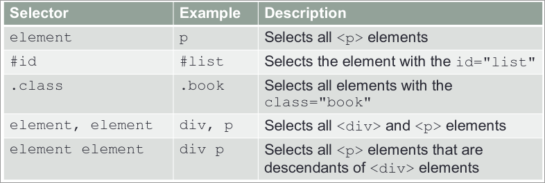
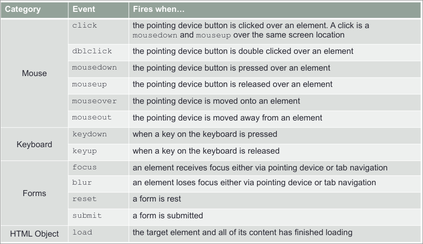

What is meant by a compiled and interpreted language?
A compiled language is one that has to be converted into an executable program which can then be run as many times as needed. An interpreted program is translated into machine code every time it needs to be ran. Javascript is an example of an interpreted program.
what is meant by weekly and strongly typed language
Strongly typed languages specify data type when defining a variable. Weakly typed languages dont need to define types, for example JavaScript.
What are the three common uses for JavaScript in Web development
JavaScript is used for web development which include modifying HTML elements, interacting with web APIs,, and Browser APIs.
Developer tools
Developer tools in chrome and firefox can be activated by right-clicking and clicking inspect/ pressing (Q). This opens up a HTML viewer with a CSS viewer below. For debugging JavaScript there is a console.
In JavaScript a semi-colon after a statement is optional. Why should you always use it anyway?
Relying on the interpreter automatically inserting semicolons can cause problems with some parts of code where it places it in the wrong position.
In JavaScript, variables can be declared with the keywords varand let. Explain the difference
When a variable is defined with var it has either global scope or local scope when its inside of a function. Using let created a variable with block scope.
every other bit of code
const - value doesn't change
console.log() - print something to console
number/0 = infinity
number/string = NaN
parseInt(variable); - can be given a base value
parseInt("FF",16); - hex to int
var list = ["a", "b", "c"]
console.log(list[1]) // "b"
var object{name:"james", age:23};
typeof name;
if(condition){
} else if {
} else {
}
switch(variable){
case 1:
break;
case 2:
break;
}
for(initialise; test; increment){
}
for(let counter=0; counter<10; counter++) {
console.log(counter);
}
for (value of iterable){
}
while(condition){
}
> greater than
< less than
>= greater than or equal to
<= less that or equal to
== equal to
!= not equal
=== equal to (strict)
!== not equal to (strict)
== and != allow for equivalent values in different types, for example 0, '0', and False
&& logical and
|| logical or
! logical not
condition ? expresion1 : expresion2;
let isMember = checkMembership(id);
let entry_fee = isMember ? '£5.80':'£10.20';
console.log(entry_fee);
`.length` returns the length of the string
`.charAt(index)` returns the character at the given index
`.indexOf(string, [from])` returns the first occurrence of the given string starting from a given point (if its given)
`.toLowerCase()` returns the string in lower case
`.toUpperCase()` returns the string in upper case
`.trim()` returns the string with white space before and after removed
`.substr(index, [length])` returns a string starting from the given index up to a given length (alternatively `.substring` or `.slice`)
`.split(separator, [limit])` returns an array of the string split where the given separator occurs with an optional limit (also removes the separator given)
`.startsWith(search term, [position])` returns a boolean weather or not the string contains a given term at the start or a given position
`.endsWith(search term), [length]` returns a boolean weather or not a sting ends with the given term, searching up to given length or the whole string
for (let i = 0; i < cost_ary.length; i++)
`Array.push()`
`Array.pop()`
`Array.unshift()` adds elements to the start of the list
`Array.shift()` removes elements from the start of the list
`Array.splice(index, [delete count], [values])` changes an array removing/replacing elements at a given index
function ascending(a, b) {
return a - b;
}
Array.sort(ascending);
`arrayString.split(seperator)` splits a string into an array, splinting at the given separator
`Array.join(seperator)` joins an array into a string, placing a given separator between values of the array
`Array.map(function)` creates an array with the result of a given function
`Array.filter(function)` creates an array with the elements that pass a test in the given function
`Array.reduce(function)` applies a function against an accumulator and each element of an array
`function name ([paramiters]){ [code to execute]}`
default values on parameters can be set by defining them when defining the function. for example
`function multi_2(x=0, y=1){ ... }`
variables defined inside a function have local scope
document.getElementById({tag id});
document.getElementsByTagName({tag name});
document.getElementsByClassName({tag class});
document.querySelector({selector});
document.querySelectorAll({selector});

node.parentNode();
node.previousSibling();
node.nextSibling();
node.childNodes();
node.firstChild();
//set a variable with a selector
var element = document.querySelector(h1);
console.print(element.getAttribute("id"));
//to change text content
element.textContent = {new value};
//to change atributes
element.setAttribute({attribute}, {value})
The DOM can only be accessed after the page is fully loaded
window.addEventListener("load", function()
{document.querySelector("#target");
});
var button = document.querySelector("#button1");
button.addEventListener("click", action);

document.querySelector("#item1").style.color = "red";
document.querySelector("#item1").classList.add(".err");
createElement(tagname)
createTextNode(text)
appendChild(element)
removeChild(element)
var target = document.querySelector("#target");
var p = document.createElement("p");
p.textContent = "Web development";
p.setAttribute("class", "web");
target.appendChild(p);
var c = document.querySelector("#child2");
c.parentNode.removeChild(c);
var p = document.querySelector("#parent");
while(p.lastChild) {
p.removeChild(p.lastChild);
}
var username = document.querySelector("#username").value.trim();
var course = document.querySelector("#course");
var selected = course.options[course.selectedIndex].value; - value on a selection box
var i, fruits = [], elems = document.querySelectorAll("#fruits input");
for(i = 0; i < elems.length; i++) {
if(elems[i].checked) {
fruits.push(elems[i].value);
}
} - getting select boxes
if(elems[i].checked) { - for radio buttons replace the if loop with this
fruit = elems[i].value;
console.log(fruit);
break;
}